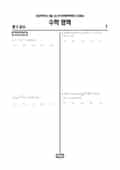

문제지

전국연합학력평가 · 시·도교육청 주관
2024년 5월 고3 학력평가 수학 확률과통계 1등급컷은 원점수 79점(역산값), 표준점수 최고점은 167점입니다.
원점수 1등급컷은 공식 발표값이 아니라 EBSi·입시기관 값입니다. 등급별 값은 등급컷 표, 출처 구분은 데이터 원칙에 있습니다.

시험지를 먼저 풀어 보세요. 등급컷·표준점수·난이도는 흐리게 가려 뒀어요.
| 등급 | 원점수 | 표준점수 | 백분위 | 누적 |
|---|---|---|---|---|
| 1 | 79 | 141 | 96 | 4.35% |
| 2 | 64 | 127 | 89 | 11.6% |
| 3 | 51 | 115 | 77 | 24.01% |
| 4 | 38 | 103 | 60 | 41.07% |
| 5 | 23 | 90 | 40 | 60.45% |
| 6 | 15 | 82 | 23 | 78.92% |
| 7 | 10 | 78 | 10 | 90.54% |
| 8 | 8 | 76 | 6 | 96.56% |
등급별 컷 · 입시기관 역산값 · 만점 100점
| 등급 | 표준점수 이상 | 인원(명) | 비율 |
|---|---|---|---|
| 1 | 141 | 12,936 | 4.35% |
| 2 | 127 | 21,543 | 7.25% |
| 3 | 115 | 36,902 | 12.41% |
| 4 | 103 | 50,726 | 17.06% |
| 5 | 90 | 57,622 | 19.38% |
| 6 | 82 | 54,905 | 18.47% |
| 7 | 78 | 34,547 | 11.62% |
| 8 | 76 | 17,909 | 6.02% |
| 9 | 67 | 10,233 | 3.44% |
수학 영역 전체 응시자 기준이에요.
출처: 시·도교육청이 공개한 전국연합학력평가 성적 분석·통계자료(공개 자료 보기).
EBSi 응답자 기준으로 가장 많이 틀린 문항은 22번(4점, 주관식)이고, 오답률은 98.2%입니다. 상위 15문항 중 1문항은 정답보다 한 오답을 고른 사람이 더 많았습니다(28번: 정답 ② 26.8%, ③ 28.9%). 오답률 50%를 넘은 문항은 15개입니다.
| 순위 | 문항 | 배점 | 오답률 | 정답 | 많이 고른 오답 |
|---|---|---|---|---|---|
| 1 | 22번 | 4점 | 98.2% | 114 | 주관식 |
| 2 | 30번 | 4점 | 96.6% | 40 | 주관식 |
| 3 | 21번 | 4점 | 95.4% | 64 | 주관식 |
| 4 | 29번 | 4점 | 95% | 75 | 주관식 |
| 5 | 20번 | 4점 | 85.3% | 25 | 주관식 |
| 6 | 19번 | 3점 | 76.1% | 11 | 주관식 |
| 7 | 28번 | 4점 | 73.2% | ② | ③ 28.9% |
| 8 | 12번 | 4점 | 71.7% | ⑤ | ④ 21.3% |
| 9 | 14번 | 4점 | 71.5% | ② | ③ 25.6% |
| 10 | 13번 | 4점 | 70.3% | ① | ④ 22% |
| 11 | 11번 | 4점 | 64% | ① | ③ 21.4% |
| 12 | 26번 | 3점 | 63.7% | ⑤ | ③ 23.3% |
| 13 | 10번 | 4점 | 60.4% | ⑤ | ④ 23.9% |
| 14 | 18번 | 3점 | 60.3% | 16 | 주관식 |
| 15 | 27번 | 3점 | 58.5% | ③ | ⑤ 17.6% |
EBSi 가채점 응답자 기준 · 전 문항 중 오답률 상위 15문항
출처: EBSi 역대 등급컷·오답률 공개 화면. 가채점에 참여한 EBSi 이용자 응답이라 전체 응시자 정답률과는 다를 수 있습니다.
발행 기관: 시·도교육청(전국연합학력평가). 파일 위치: 이 사이트가 보관한 사본. 저작권은 발행 기관에 있습니다. 원본과 다르거나 게시 중단이 필요하면 연락처로 알려 주세요. 등급컷 출처 구분은 데이터 원칙에서 설명합니다.
막대 색은 역대 대비 난이도 · 진한 막대가 이 시험 · 막대를 누르면 그 회차로 이동
| 회차 | 1등급컷 | 표점 최고 | 1등급 표점 | 난이도 |
|---|---|---|---|---|
| 5월 학평2024년 고3이 시험 | 79 | 167 | 141 | 매우 어려움 |
| 3월 학평2024년 고3 | 86 | 154 | 137 | 보통 |
| 10월 학평2023년 고3 | 88 | 150 | 135 | 쉬움 |
| 7월 학평2023년 고3 | 79 | 157 | 136 | 어려움 |
| 4월 학평2023년 고3 | 81 | 162 | 136 | 어려움 |
| 3월 학평2023년 고3 | 85 | 159 | 138 | 어려움 |
| 10월 학평2022년 고3 | 84 | 154 | 136 | 어려움 |
| 7월 학평2022년 고3 | 86 | 152 | 136 | 쉬움 |
| 4월 학평2022년 고3 | 80 | 160 | 138 | 매우 어려움 |
| 3월 학평2022년 고3 | 79 | 165 | 141 | 매우 어려움 |
공통과목 22번(4점, 98.2%)은 서로 다른 세 극값을 갖는 사차함수와 두 함수가 조건을 만족시키는 문항, 21번(4점, 95.4%)은 부채꼴의 호 위의 점과 평행선으로 만든 도형 문항, 20번(85.3%)은 두 다항함수의 극한 조건 문항이었습니다.
3점짜리 19번(76.1%)은 거듭제곱근으로 정의한 두 집합의 조건을 다룬 문항이었고, 객관식 12~14번도 모두 오답률 70%를 넘었습니다.
확률과 통계 30번(4점, 96.6%)은 원 둘레를 등분하는 점과 중심에 숫자 깃발을 놓는 경우의 수 문항, 29번(4점, 95.0%)은 조건을 만족시키는 자연수 순서쌍의 개수 문항, 28번(73.2%)도 오답률이 높았습니다.
표준점수 최고점이 160점을 넘을 만큼 어려운 수학이었습니다. 이런 시험에서는 22·30번에 시간을 쏟기보다 12~14번, 19·20번처럼 오답률 70~85%인 문항을 정확히 맞히는 것이 등급을 좌우합니다. 시험 전체 흐름은 이 회차의 회차 해설에 정리했습니다.